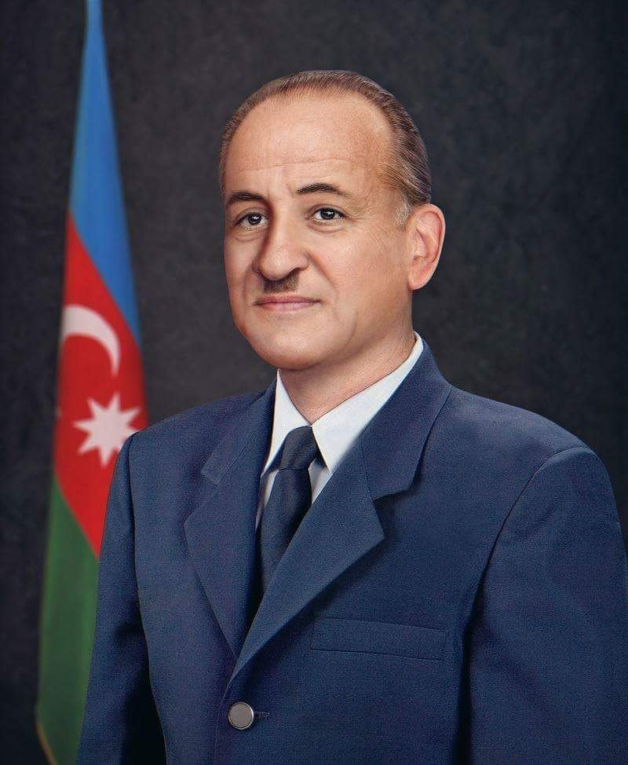
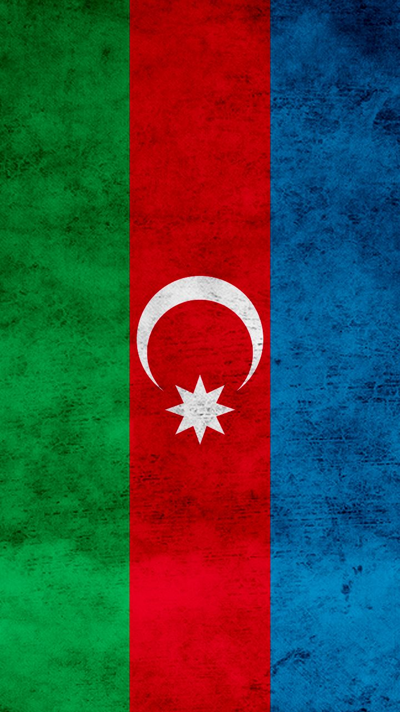
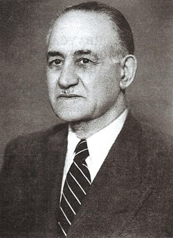
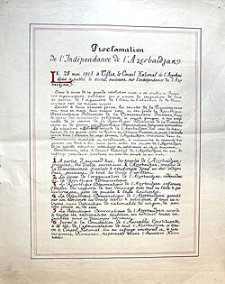
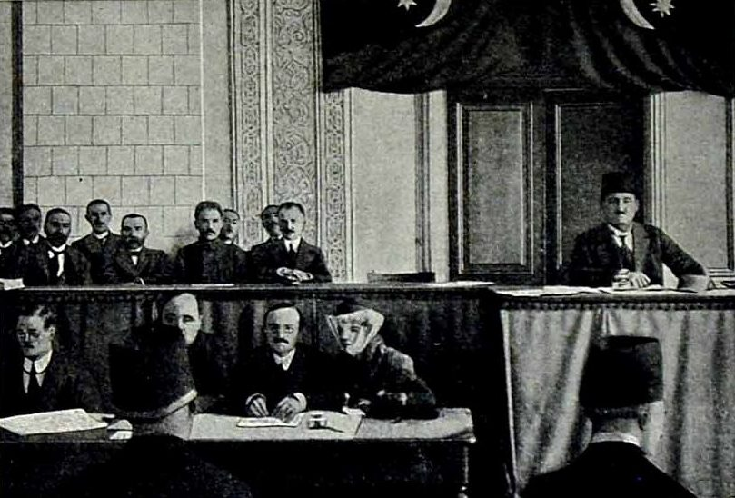
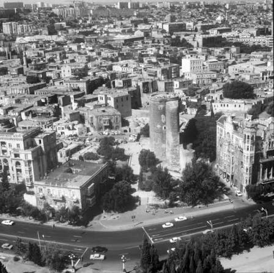
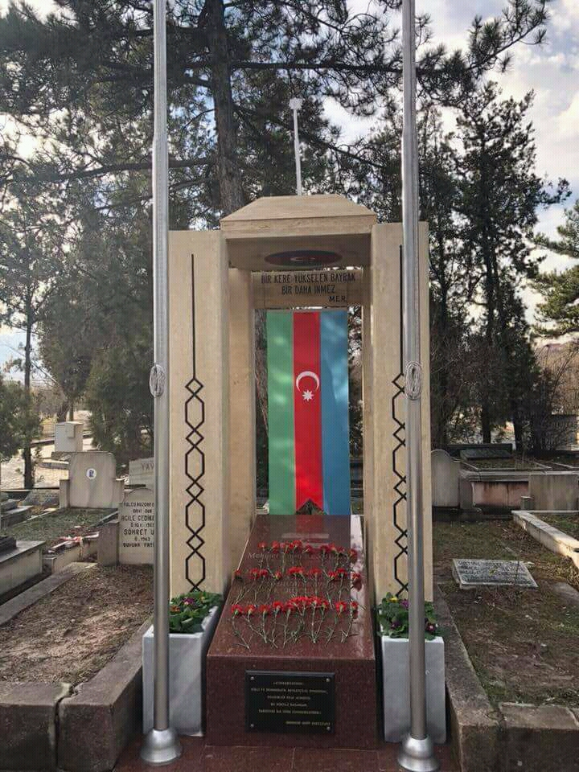
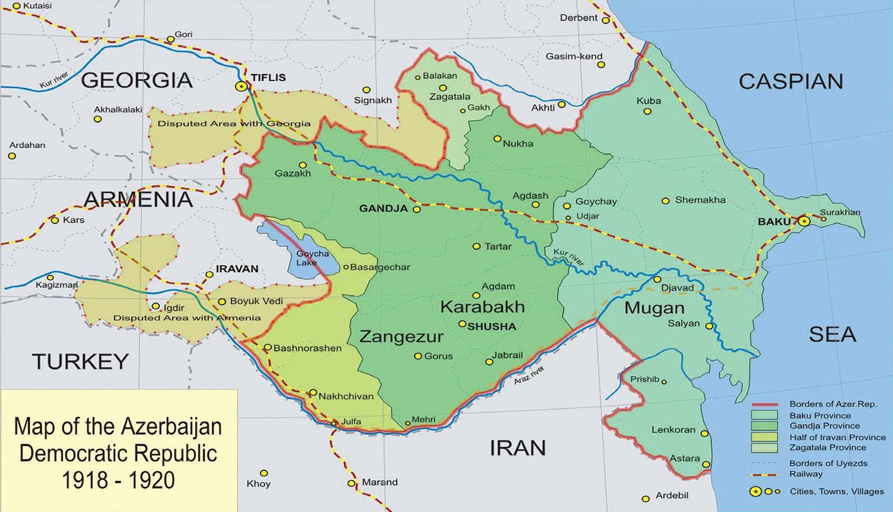

Məhəmməd Əmin Rəsulzadəni yalnız Azərbaycanın ilk müstəqil respublikasının qurucularından biri kimi tanımaq onun haqqında çox şeyi yarımçıq qoyar. O, eyni zamanda güclü qələmə, geniş dünyagörüşünə və milli azadlıq ideyasına böyük bağlılığı olan bir fikir adamı idi. Rəsulzadə yazıya və mətbuata xüsusi əhəmiyyət verirdi. O, qəzet və jurnallarda yazdığı məqalələrlə insanları düşündürməyə, milli kimlik və azadlıq haqqında danışmağa çalışırdı. Onun üçün müstəqillik sadəcə bir dövlətin adının dəyişməsi deyildi. O düşünürdü ki, xalq öz dilinə, mədəniyyətinə və kimliyinə sahib çıxmalı, gələcəyini özü müəyyən etməlidir. Onun ən diqqətçəkən xüsusiyyətlərindən biri isə çətinliklər qarşısında fikrindən dönməməsi idi. Azərbaycan müstəqilliyini itirdikdən sonra belə bu ideyanı özündə yaşatdı və mühacirətdə olduğu illərdə də Azərbaycan haqqında yazmağa davam etdi. Ölkəsindən uzaqda yaşasa da, siyasi fəaliyyətini və mübarizəsini dayandırmadı. Rəsulzadənin fəaliyyəti yalnız siyasətlə məhdudlaşmırdı. O, ədəbiyyat, mətbuat və tarixlə də yaxından maraqlanır, müxtəlif mövzularda əsərlər və məqalələr yazırdı. Onun düşüncəsində xalqın maariflənməsi və savadlanması da müstəqillik qədər vacib idi. Bu gün Rəsulzadənin adı çəkiləndə ən çox xatırlanan ifadələrdən biri “Bir kərə yüksələn bayraq, bir daha enməz!” sözləridir. Bu fikir onun Azərbaycan istiqlalına münasibətini çox yaxşı ifadə edir: müstəqillik yalnız qazanılan bir siyasi nəticə deyil, qorunmalı və gələcək nəsillərə ötürülməli bir idealdır. Bəlkə də Rəsulzadənin ən maraqlı tərəfi budur: o, müstəqilliyi yalnız öz dövrü üçün düşünmürdü. Onun yazılarında və fikirlərində gələcək Azərbaycan təsəvvürü də vardı. Buna görə də onun irsi bu gün yalnız tarix kimi deyil, Azərbaycanın milli düşüncəsinin bir hissəsi kimi yaşamaqdadır. Rəsulzadənin düşüncələrində azadlıq anlayışı xüsusi yer tuturdu. O, insanların yalnız öz ölkəsində deyil, düşüncələrində də azad olmasını vacib hesab edirdi. Milli kimliyin qorunmasını isə bu azadlığın əsas hissələrindən biri kimi görürdü. Ona görə xalq öz tarixini, dilini və mədəniyyətini tanımadan gələcəyini də tam şəkildə qura bilməzdi. Onun fikirlərində gənclərə və təhsilə də xüsusi yer ayrılırdı. Rəsulzadə savadlı və düşünən bir cəmiyyətin ölkənin gələcəyi üçün ən böyük güclərdən biri olduğuna inanırdı. Buna görə onun mübarizəsi yalnız siyasi hakimiyyət uğrunda deyil, daha şüurlu və azad bir cəmiyyət yaratmaq ideyası ətrafında da formalaşmışdı.Rəsulzadənin həyatında maraqlı məqamlardan biri də odur ki, o, müxtəlif ölkələrdə yaşamasına baxmayaraq Azərbaycanla əlaqəsini heç vaxt itirmədi. Harada olmasından asılı olmayaraq yazılarında Azərbaycandan, onun tarixindən və gələcəyindən danışırdı. Mühacirətdə keçirdiyi illər onun üçün ölkədən uzaq qalmaq demək idi, amma Azərbaycan ideyasından uzaqlaşmaq demək deyildi.Onun irsi bu gün müxtəlif sahələrdə özünü göstərir. Yazıları, siyasi fikirləri və istiqlal haqqında düşüncələri Azərbaycan tarixinin mühüm hissəsinə çevrilib. Rəsulzadənin adı yalnız keçmişdə baş vermiş bir hadisə ilə deyil, azadlıq və milli dövlətçilik düşüncəsi ilə birlikdə xatırlanır.Buna görə Rəsulzadəni tanımaq sadəcə onun həyat tarixini öyrənmək deyil. Onun hansı ideyalara inandığını, nə üçün bu ideyaların arxasınca getdiyini və bütün çətinliklərə baxmayaraq onları qoruduğunu anlamaqdır. Məhz bu xüsusiyyət onun adını Azərbaycan tarixində xüsusi edən əsas səbəblərdən biridir.
"İnsanlara hürriyyət, millətlərə istiqlal!"
"Müstəqillik hər bir millətin yaşamaq və var olmaq haqqıdır."
"Əqidəsi, məqsədi bir olan insanlar heç vaxt məğlub olmazlar."
"Gənclər! Bizim gələcəyimiz, ümidimiz sizsiniz. İstiqlal bayrağını yüksəkdə tutmaq sizin borcunuzdur."
"Biz nə qədər zülmə, təzyiqə məruz qalsaq da, milli azadlıq ruhumuz heç vaxt sönməyəcəkdir."
"Milli azadlıq – hər bir millətin öz taleyini özünün təyin etməsi deməkdir."
Şərqdə ilk demokratik respublika olan Azərbaycan Xalq Cümhuriyyətinin mühüm nailiyyətləri:
|
🏛️ Dövlət Qurumları:
Milli Şura və Nazirlər Şurası yaradılaraq icraedici hakimiyyət formalaşdırıldı.
📜 İstiqlal Bəyannaməsi:
28 May 1918-ci ildə Tiflisdə Azərbaycanın müstəqilliyi rəsmən elan edildi.
🎓 Bakı Dövlət Universiteti:
1919-cu ildə milli kadrların yetişdirilməsi üçün ilk milli universitet quruldu. |
 |
🗳️ Parlament:
100-dən çox deputatın daxil olduğu çoxpartiyalı ilk parlament fəaliyyətə başladı.
🧕 Qadınlara Seçki Hüququ:
Bir çox qərb ölkəsindən daha əvvəl qadınlara seçmək və seçilmək hüququ verildi.
🇦🇿 Milli Simvollar:
Milli bayraq, gerb, hümmn təsbit edildi və Azərbaycan dili rəsmi dövlət dili elan olundu. |





